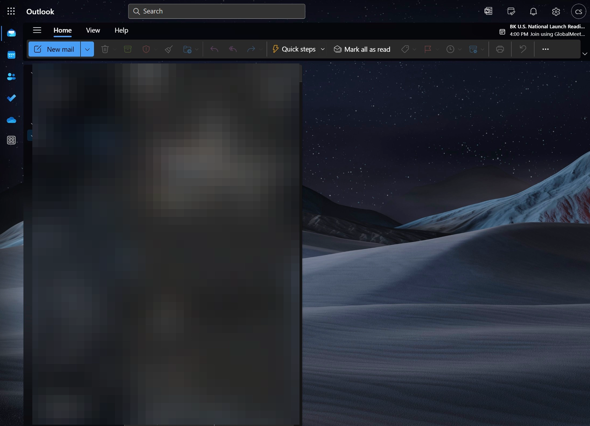
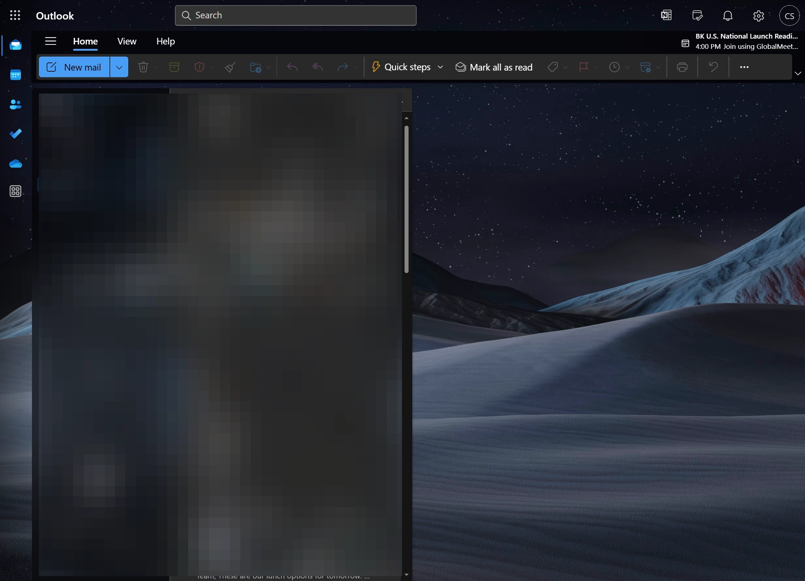
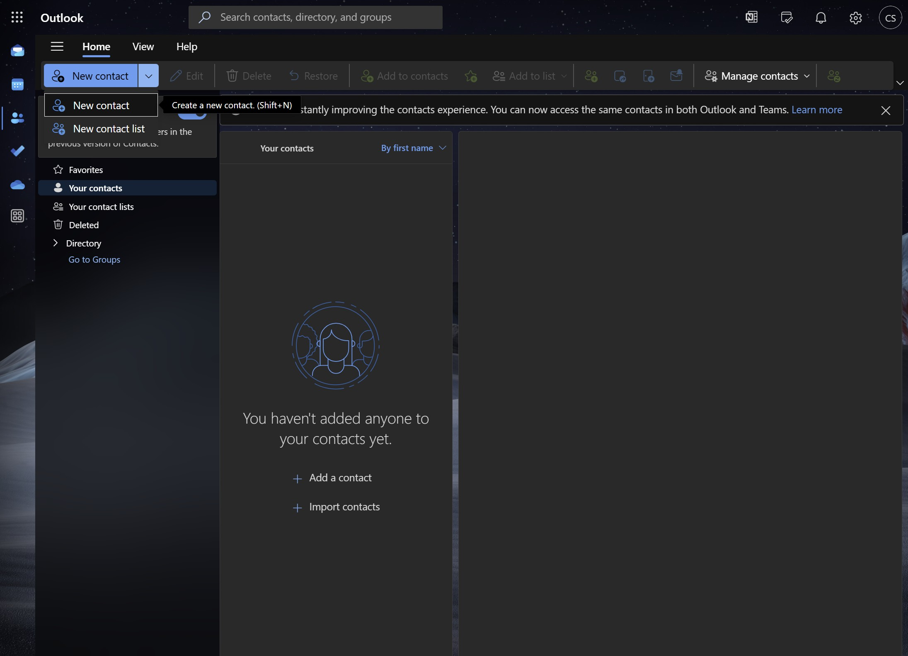
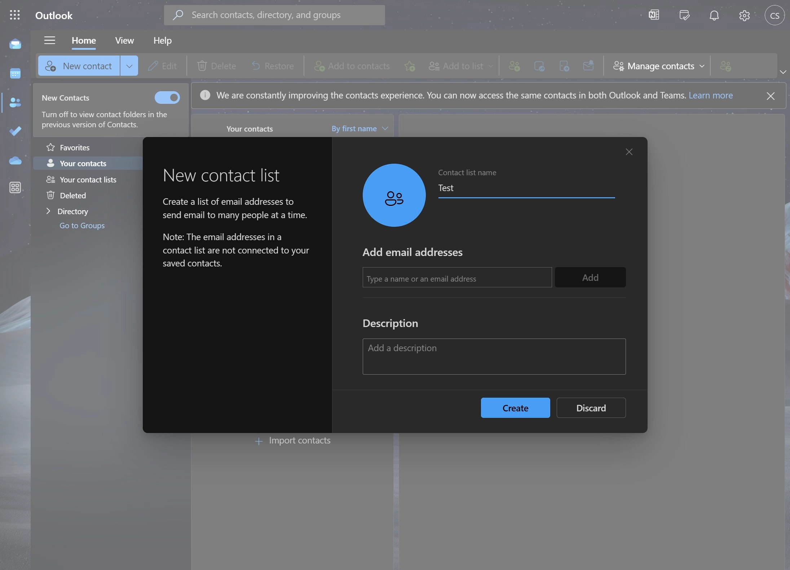
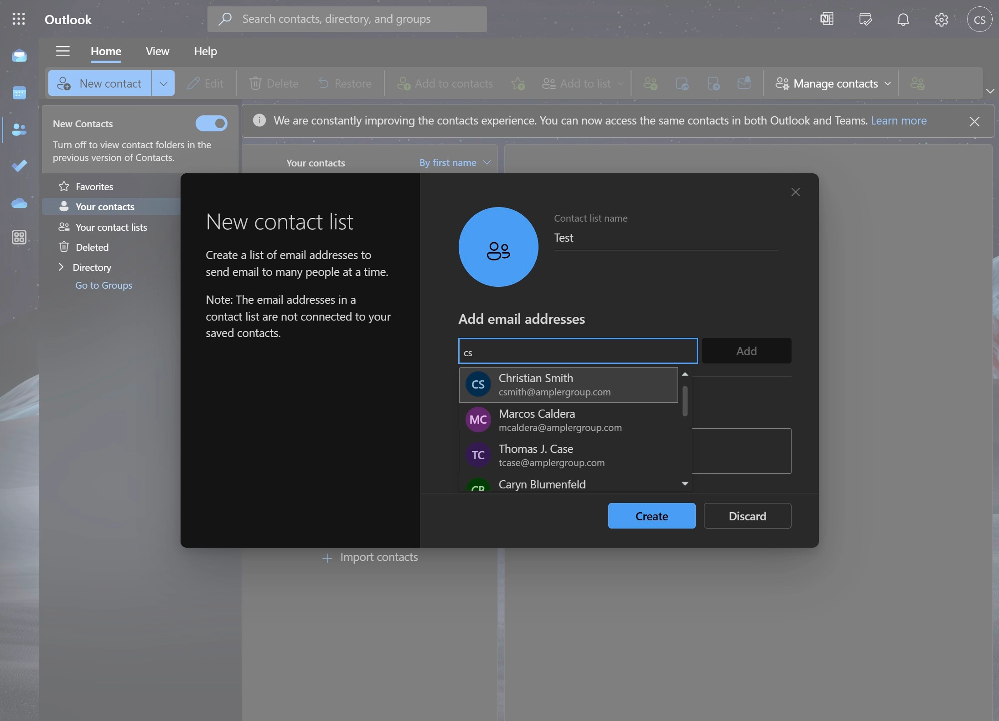
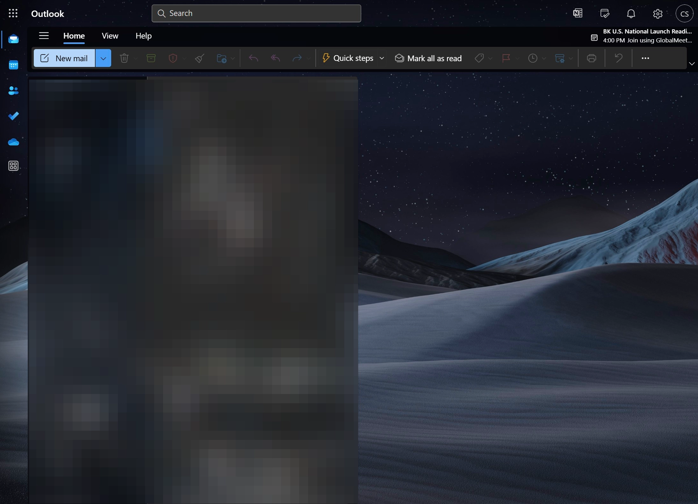
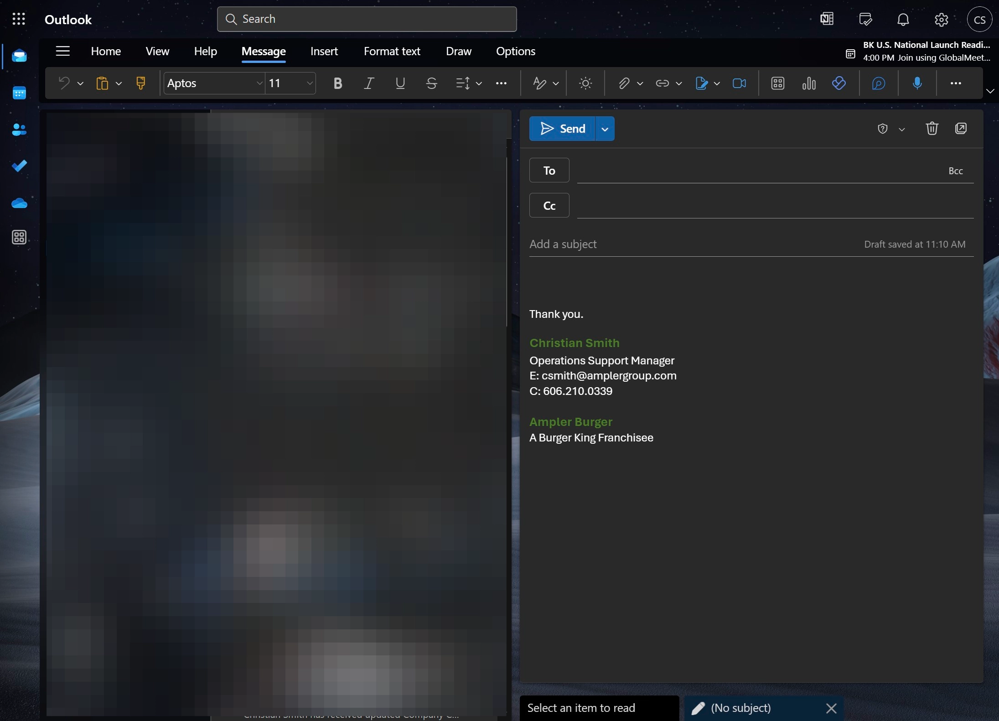
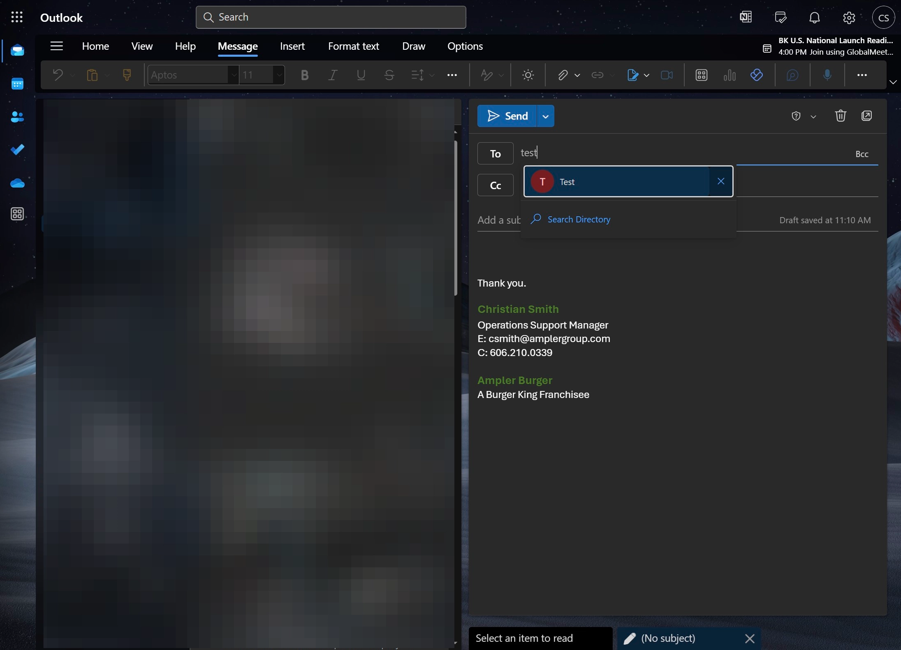

Creating Contact List
-
1Navigate to https://outlook.office.com/mail/

-
2Click the people symbol.

-
3Click "New contact list"

-
4Name the Contact List.

-
5Add contacts.

-
6Click "Create"

Adding Contact List to New Email
-
7Click "New mail"

-
8Type in name of Contact List.

-
9Select Contact List.
